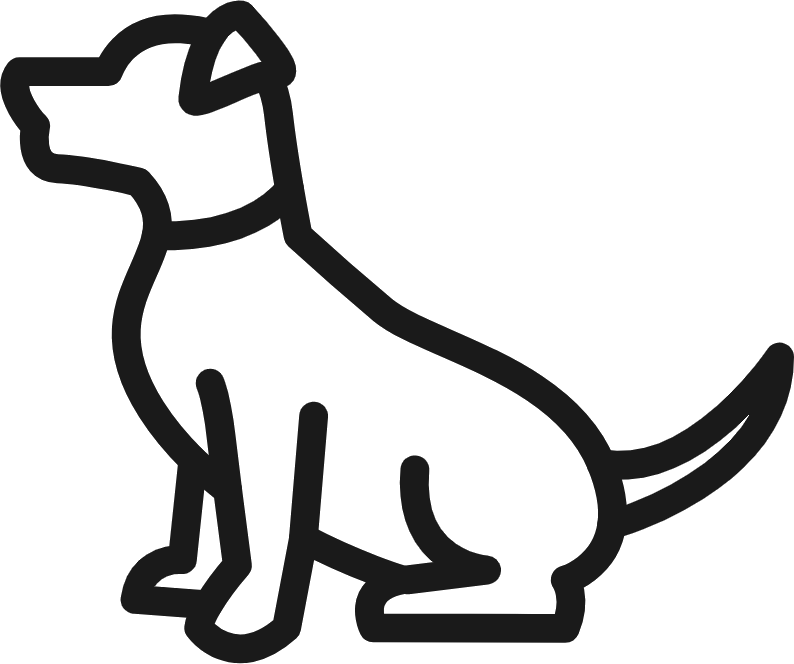
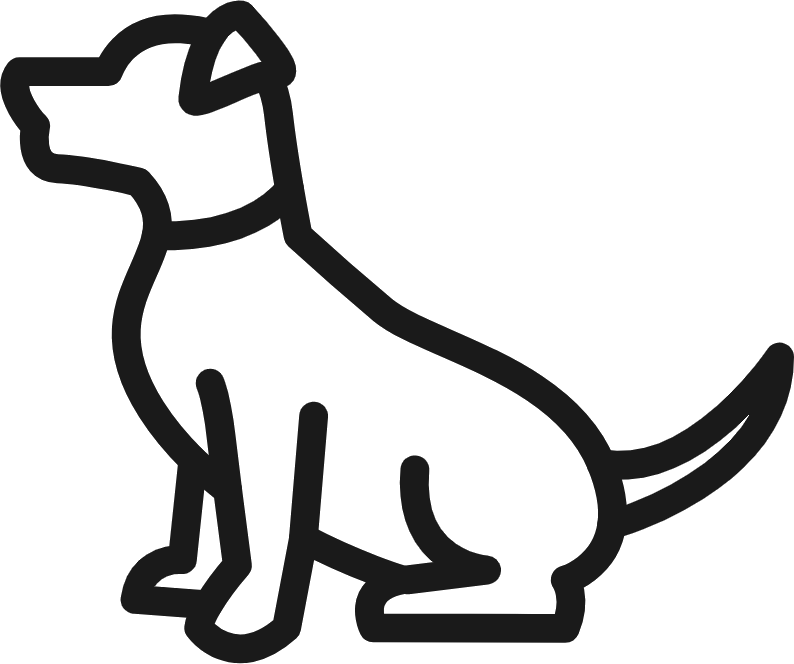
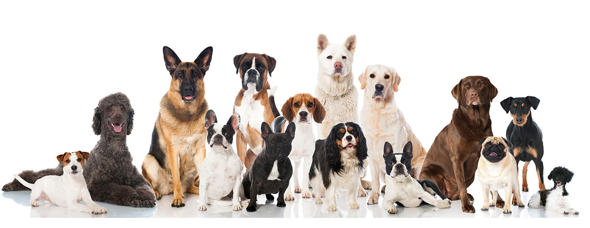

Dog Adoptions!

Welcome
Welcome to Dog Adoptions! Up in the navigation bar you have the options to return to this page (the Home page), view the dogs available (Dogs), view articles on Pros and Cons of dog ownership (Pros and Cons) and to view other articles (About). Please take the time to look at the various dogs we have on display here. We hope you like them!